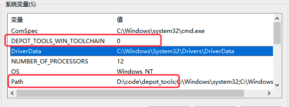

任何想入手WebRTC的人，都必须要先过编译大魔王这一关。大魔王精通各种故障制造手法，随便来个网络故障就要折腾我们半天，一些初出茅庐的新手，可能就因此放弃了。本文将笔者编译过程中遇到的坑坑点点记录下来，以飨读者。
前置准备
开发环境
在开始WebRTC之旅前，我们要做好充足的准备，才能游刃有余。编译设备和工具的选用：
- CPU建议8代I7起步，Win10/11 64bits专业版系统，16/32GB内存，NTFS格式磁盘，空间至少剩余250GB。
FAT32不起作用，因为某些Git包文件大于4GB。
- Google的编译工具更新十分的快，要想使用最新版本的WebRTC，则必须要更新Visual Studio到2019版本。
Visual Studio必须安装“Desktop development with C++”组件和“MFC/ATL support”子组件。
- 更新Windows SDK到最新版本，本文撰写时最新版本号为：10.0.22621.0，地址[1]见Windows开发人员中心。
谷歌工具
在准备好基础设施后，在正式启动WebRTC编译工作前，还需要安装Google的开发工具depot tools[2]。按照下面步骤执行：
步骤一：将depot_tools下载后解压到某个目录，这里需要注意两点：
- 为了保留目录里的.git文件夹，必须要使用右键菜单的
全部解压缩或者解压软件来提取到目录中。 - depot_tools不能保存在*C:\Program Files (x86)*文件夹下，否则后续操作会报错。
步骤二：将depot_tools路径增加到系统环境变量PATH中，增加系统环境变量DEPOT_TOOLS_WIN_TOOLCHAIN=0，告诉depot_tools使用本地安装的Visual Studio。两个注意项：
- 建议两个环境变量设置成系统环境变量，不要放到用户环境变量里；
- depot_tools路径环境变量必须要在任何安装的Python/Git路径前。
1 | $ setx PATH=e:\depot_tools;%PATH% /m |

步骤三：通过cmd运行gclient命令去更新depot_tools及其依赖项。
1 | $ gclient |
行文至此，准备工作的最后提醒，FBI Warning：考虑到一些网络因素，建议科学上网。
编译代码
下载代码
下载代码步骤虽然简单，但是出错的可能性很大，出错的最大原因在于前置准备不够充分，重新看看哪里没有搞对。按照下面脚本执行：
1 | mkdir webrtc-checkout |
由于WebRTC代码在谷歌的仓库里，想要拉到这些代码是一个非常漫长的过程，Please Keep Patience。
生成编译
WebRTC的默认构建系统为Ninja，Ninja工程文件通过GN（Google构建配置工具Google’s Ninja）来生成。按照下面脚本执行：
1 | $ gn gen out/Default --ide="vs2017" # 参照GN Reference IDE Flag来更改对应的IDE |
建议直接使用Developer Command Prompt for VS 2019来执行命令，而不是直接使用cmd——可能会出现报错，但是也不一定，如果出错了可以试试。
错误记录
错误一：IOError: [Errno 2] No such file or directory: ‘webrtc-checkout\src\build\util\LASTCHANGE.committime’
解决方案[3]见连接：https://groups.google.com/a/chromium.org/g/chromium-discuss/c/9-clGIeN7bI?pli=1
步骤如下：
- 检查webrtc-checkout\src\build\util目录下是否存在LASTCHANGE.committime文件
- 若不存在，执行命令"lastchange.py LASTCHANGE.dummy" or “python lastchange.py LASTCHANGE.dummy”
- 将生成的LASTCHANGE.dummy.committime重命名为LASTCHANGE.committime
错误二：VS2019提醒未识别的命令ninja.exe
这是因为VS2019没有办法直接识别Ninja.exe，因此需要将ninja.exe放到环境变量里面，其目录如下：
1 | C:\Program Files (x86)\Microsoft Visual Studio\2019\Enterprise\Common7\IDE\CommonExtensions\Microsoft\CMake\Ninja |
运行程序
单元测试
WebRTC的单元测试大部分是编译在.lib文件中，然后链接到同一个exe文件，以module为例就是modules_unittests.exe。如果想要使用resharper C++的单元测试工具直接调试某个.lib文件中的单元测试用例，需要将modules_unittests.exe的路径增加到对应的工程–>配置属性–>调试–>命令中。
调试更改
WebRTC的demo PeerConnectionClient/Service已经不再维护，如果想要在本地回环使用peerconnection_client可以按照下列更改。
1 | // api/peerconnection_interface.h |